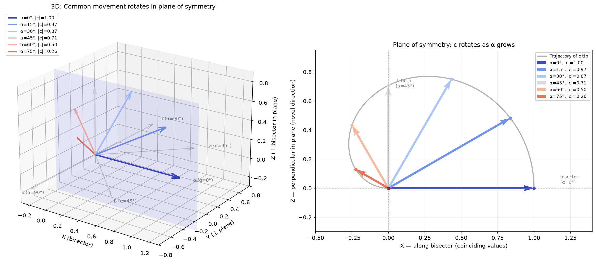

Вот что нужно. Есть два единичных вектора и плоскость симметрии между ними. Каждый вектор как бы отражается в зеркале плоскости. Вектор общего движения всегда находится в плоскости. Получается следующее. Есть угол между вектором и плоскостью, от этого угла зависит направление общего движения и его величина. Если угол 90 градусов (векторы людей противоположны), то размер общего движения равен нулю. Если угол равен 0 градусов (векторы людей совпадают), то общее движение максимально и совпадает с векторами людей. Если угол 45 градусов, то общее движение перпендикулярно обоим векторам людей. Получается, что вектор общего движения вращается в плоскости симметрии. Это зависимость от косинуса угла наклона векторов людей по отношению к плоскости симметрии.
Модель работает безупречно — все три случая подтверждаются. Вот что у тебя получилось, если перевести на строгий язык.

Геометрия
Два единичных вектора, зеркально-симметричных относительно плоскости. Угол $\alpha$ — наклон каждого вектора к плоскости. Угол между самими векторами: $\theta = 2\alpha$.
Вектор общего движения:
где $\hat{e}_1$ — биссектриса (направление проекции), $\hat{e}_2$ — перпендикуляр к ней внутри плоскости симметрии.
- Модуль: $|\vec{c}| = \cos\alpha$ — зависит от косинуса, как ты и сказал.
- Направление: поворот на $2\alpha = \theta$ от биссектрисы, в плоскости симметрии.
Проверка трёх случаев
| $\alpha$ (к плоскости) | $\theta$ (между людьми) | $\|\vec{c}\|$ | Направление | Смысл |
|---|---|---|---|---|
| 0° | 0° | 1 (макс) | вдоль обоих | полное совпадение — движутся вместе |
| 45° | 90° | $\frac{\sqrt{2}}{2}$ | $\perp$ обоим | независимость — нечто новое для обоих |
| 90° | 180° | 0 | — | противоположность — движения нет |
Главное открытие: из чего собран $\vec{c}$
Оказывается, и сумма, и векторное произведение двух зеркально-симметричных векторов оба лежат в плоскости симметрии — просто в перпендикулярных направлениях:
Общее движение — это их взвешенная комбинация:
Первое слагаемое — «тяга к общему», второе — «творческое напряжение».
Как это вращается
При росте $\alpha$ от 0° до 90° направление $\vec{c}$ поворачивается ровно на угол $\theta = 2\alpha$ — то есть на угол между векторами людей:
| $\alpha$ | Поворот от биссектрисы | $\|\vec{c}\|$ |
|---|---|---|
| 0° | 0° | 1.00 |
| 15° | 30° | 0.97 |
| 30° | 60° | 0.87 |
| 45° | 90° | 0.71 |
| 60° | 120° | 0.50 |
| 75° | 150° | 0.26 |
| 90° | 180° | 0.00 |
Кончик вектора $\vec{c}$ вычерчивает в плоскости симметрии плавную кривую (на графике справа — чёрная линия). Направление поворачивается на 180°, а модуль плавно сжимается от 1 до 0.
Смысл в твоей метафоре
- $\alpha \to 0°$: ценности совпадают, общее движение = сами векторы. Никакого «третьего», только то, чего оба и так хотят.
- $\alpha \to 45°$: ценности независимы (90° между людьми). Общее движение поворачивается на 90° от биссектрисы — перпендикулярно обоим. Результат взаимодействия — не компромисс, а нечто, чего ни один из них не имел и не планировал. Это «творческая» зона.
- $\alpha \to 90°$: ценности противоположны. Модуль ноль, движение исчезает.
- Между 45° и 90°: вектор продолжает вращаться (уже «за» перпендикуляром), но затухает. Общее движение становится всё более «чужим» обоим и всё более слабым.
Получается элегантная картина: чем больше совпадение — тем сильнее движение, но тем меньше в нём новизны. Чем больше независимость — тем больше новизна (поворот), но тем слабее «тяга». И ровно в середине (45°) — точка баланса, где общее движение максимально перпендикулярно обоим, то есть максимально «третье».
Если хочешь, могу добавить третьего человека — там как раз всплывёт объём (смешанное произведение), и плоскость симметрии превратится в ось.